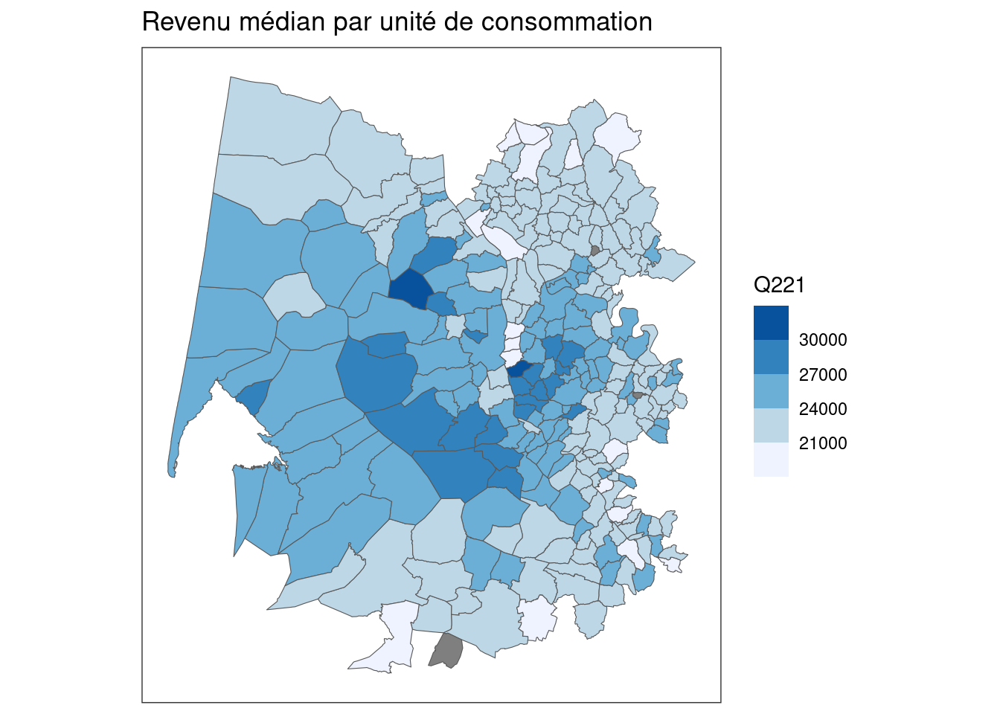
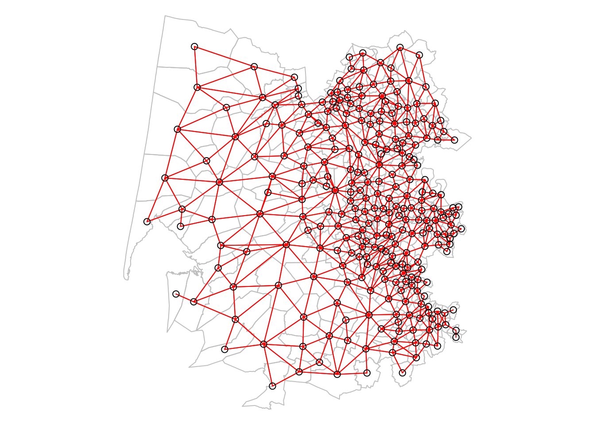
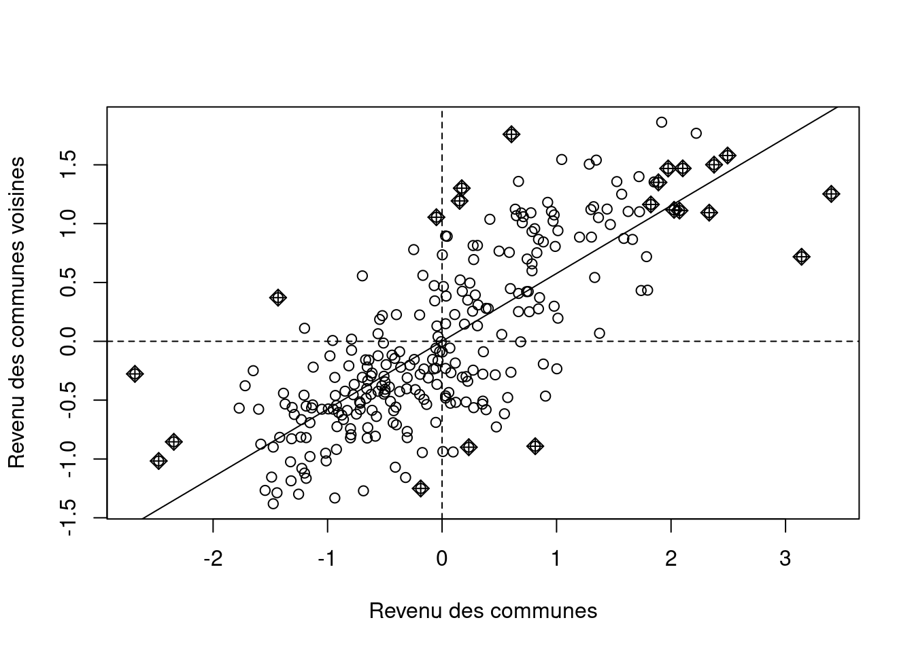
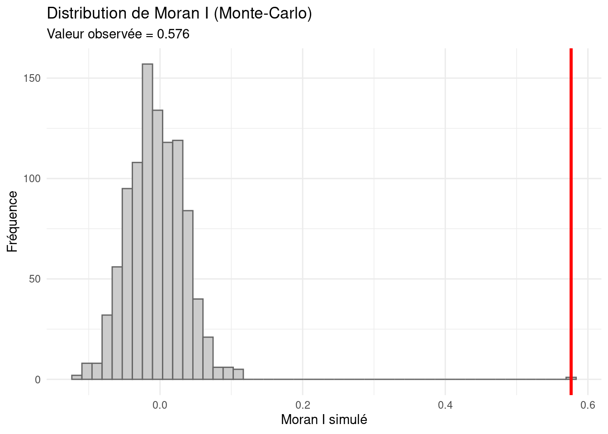
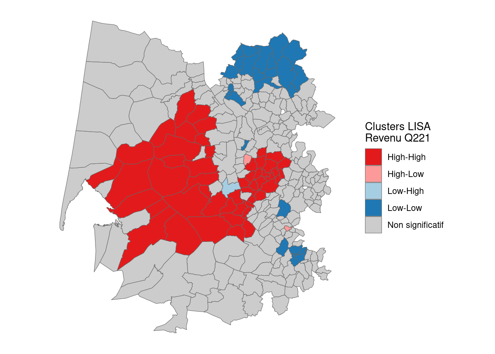
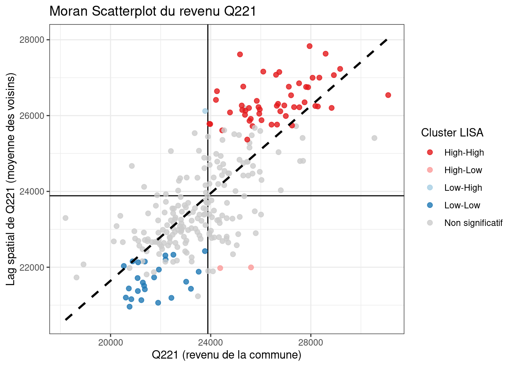

library(sf)
library(dplyr)
library(ggplot2)
library(readr)
library(spdep)Analyse de l’autocorrélation spatiale
Introduction
La notion d’autocorrélation spatiale
L’autocorrélation spatiale est une notion clé en géographie et en analyse spatiale. Elle mesure le degré de ressemblance ou de différence des valeurs d’une variable selon leur proximité géographique.
Elle permet de répondre à la question : les unités spatiales voisines ont-elles tendance à présenter des valeurs similaires ou différentes ?
Une autocorrélation spatiale positive se traduit par des regroupements de valeurs similaires (clusters de hauts ou bas revenus, par exemple), tandis qu’une autocorrélation négative indique que des valeurs élevées sont entourées de valeurs faibles, et vice versa.
L’étude de l’autocorrélation spatiale permet ainsi d’identifier des zones homogènes, des points chauds ou des anomalies locales, fournissant un éclairage sur la structure spatiale des phénomènes étudiés.
Les indicateurs globaux, comme le Moran I, donnent une vue d’ensemble, tandis que les indicateurs locaux (LISA) permettent de localiser précisément les clusters et les outliers.
L’objectif de ce TD est d’apprendre à mettre en place ces deux méthodes afin d’évaluer le niveau d’autocorrélation spatiale du niveau de vie médian communal dans une aire d’attraction.
Préparation de l’environnement de travail
Il est d’abord nécessaire de charger les packages classiques afin de charger et manipuler des données tabulaires et des données spatiales vectorielles. On ajoute également {ggplot2} pour la visualisation et {spdep} pour l’analyse spatiale. Ce dernier package permet de travailler sur la dépendance spatiale en gérant notamment les matrices de poids.
On charge ensuite les deux couches de données nécessaire pour l’analyse de l’auto-corrélation spatiale des revenus médians communaux à l’échelle des AAV.
aav <- st_read("../data/aav2020.gpkg", quiet=T)
filosofi <- st_read("../data/filosofi_communes_2022.gpkg", quiet=T)Pour ce tutoriel, nous allons nous focaliser sur la ville de Bordeaux. On va donc enregistrer son code dans une variable. Pour changer de ville, il suffira de modifier cette partie. On sélectionne ensuite la ligne de la couche aav qui correspond à la ville d’intérêt.
aav_code = "006"
aav_geom <- aav %>% filter(aav2020==aav_code)Ensuite, on récupère toutes les communes de filosofi qui intersectent la géométrie de l’AAV. Pour cela, on transforme à la volée les communes en points afin d’accélérer le traitement et de ne bien inclure que les communes à l’intérieur du périmètre.
int <- st_intersects(st_point_on_surface(filosofi), aav_geom)Warning: st_point_on_surface assumes attributes are constant over geometriesiris_aav <- filosofi[sapply(1:nrow(filosofi), function(x) length(int[[x]])>0),]On effectue ensuite une rapide visualisation des revenus communaux.
ggplot()+
geom_sf(data = iris_aav, aes(fill=Q221))+
scale_fill_fermenter(direction = 1)+
theme_bw()+
coord_sf(datum = NA)+
labs(title = "Revenu médian par unité de consommation")
Avant de continuer, on regarde rapidement s’il y a beaucoup de valeurs manquantes qui pourraient affecter l’analyse.
iris_aav %>%
as_tibble() %>%
summarise(nb_NA = sum(is.na(Q221)),
pct_NA = mean(is.na(Q221))*100) %>% knitr::kable()| nb_NA | pct_NA |
|---|---|
| 3 | 1.090909 |
Ce n’est pas le cas, on les supprime donc du tableau.
filo <- iris_aav %>% filter(!is.na(Q221))Calcul d’indicateurs d’auto-corrélation spatiale
L’analyse globale
L’indicateur permettant de calculer l’auto-corrélation spatiale globale d’un jeu de données est le I de Moran. Le \(I\) de Moran est un indicateur statistique qui mesure le niveau d’autocorrélation spatiale d’une variable, c’est-à-dire la tendance qu’ont des valeurs similaires (élevées ou faibles) à se regrouper dans l’espace.
I > 0 : autocorrélation spatiale positive (les valeurs semblables se regroupent)
I < 0 : l’autocorrélation spatiale négative (les valeurs dissemblables sont proches).
I ≈ 0 : absence d’autocorrélation spatiale (répartition aléatoire).
Il s’appuie sur un matrice de voisinage pour quantifier comment les valeurs observées se distribuent spatialement. La première étape de cette analyse est de construire une liste de voisins et de transformer cette liste en matrice de poids spatiaux.
nb <- poly2nb(filo, queen = TRUE)
listw <- nb2listw(nb, style = "W") # (style W = lignes normalisées)Une telle matrice prend la forme suivante.
par(mar=c(0,0,0,0))
plot(st_geometry(filo), border="grey")
plot(nb, st_coordinates(st_centroid(filo)), col="red", add=TRUE)
Le calcul de l’indicateur repose sur trois étapes :
On commence par regarder si chaque commune a un revenu plus élevé ou plus faible que la moyenne. On calcule donc \(x_i-\overline{x}\).
Ensuite, on compare cette valeur aux écarts des communes voisines, en utilisant une matrice de voisinage (listw dans ton code), qui dit quelles communes sont voisines et avec quel poids.
Pour permettre la comparaison entre jeux de données, on divise par la somme des carrés des écarts à la moyenne.
L’idée du Moran I est alors de vérifier si les communes élevées sont entourées de communes élevées et les communes faibles sont entourées de communes faibles.
# Diagramme de Moran
moran.plot(as.vector(scale(filo$Q221)), listw, labels = FALSE,
xlab = "Revenu des communes",
ylab = "Revenu des communes voisines")
Le test de Moran compare ensuite cet indicateur à ce qu’on obtiendrait si les revenus étaient distribués au hasard dans l’espace par le biais de nombreuses permutations. Par exemple ci-dessous avec 999 permutations.
res_mc <- moran.mc(filo$Q221, listw, nsim = 999)
res_mc
Monte-Carlo simulation of Moran I
data: filo$Q221
weights: listw
number of simulations + 1: 1000
statistic = 0.57649, observed rank = 1000, p-value = 0.001
alternative hypothesis: greaterLe test montre une autocorrélation spatiale fortement positive du revenu des communes.
La valeur observée du Moran I est 0.576, ce qui indique que les communes tendent clairement à ressembler à leurs voisines : les communes à revenu élevé sont regroupées entre elles, et les communes à revenu faible aussi.
Avec une p-value de 0.001, cette autocorrélation est hautement significative : sur 1000 simulations aléatoires, aucune n’a produit un I aussi élevé que celui observé.
→ On rejette donc l’hypothèse d’une répartition spatiale aléatoire. Le revenu présente un fort clustering spatial, loin d’être dû au hasard.
On peut visualiser le résultat de ce test de la manière suivante.
# extraction des données
obs <- res_mc$statistic # Moran I observé
sim <- res_mc$res # valeurs simulées
# dataframe pour ggplot
df_mc <- data.frame(sim = sim)
ggplot(df_mc, aes(x = sim)) +
geom_histogram(bins =50, fill = "grey80", color = "grey40") +
geom_vline(xintercept = obs, color = "red", linewidth = 1.2) +
labs(
title = "Distribution de Moran I (Monte-Carlo)",
subtitle = paste("Valeur observée =", round(obs, 3)),
x = "Moran I simulé",
y = "Fréquence"
) +
theme_minimal()
L’analyse locale
Les LISA (Local Indicators of Spatial Association) sont des indicateurs qui mesurent l’autocorrélation spatiale locale.
Alors que le Moran I global résume l’ensemble du territoire avec une seule valeur, les LISA permettent de localiser précisément où se trouvent :
des clusters de valeurs proches (ex. haut-haut, bas-bas),
des outliers spatiaux (ex. une commune élevée entourée de faibles, ou l’inverse).
Concrètement, les LISA identifient les zones où la variable étudiée est significativement similaire ou dissemblable à celle des voisins.
Il se calcule à l’aide de la fonction suivante :
lisa <- localmoran(filo$Q221, listw)On stocke ensuite les résultats dans un tableau :
filo <- filo %>%
mutate(
Ii = lisa[,1], # valeur du local Moran
E_Ii = lisa[,2], # espérance
Var_Ii = lisa[,3], # variance
Z_Ii = lisa[,4], # statistique Z
p_Ii = lisa[,5] # p-value
)On calcule la moyenne globale de la variable Q221 (niveau de vie).
Puis on crée une nouvelle colonne categorie qui classe chaque commune selon le type de cluster local :
High-High (HH) : valeur élevée entourée de voisines élevées (autocorrélation positive significative)
Low-Low (LL) : valeur faible entourée de voisines faibles (autocorrélation positive significative)
High-Low (HL) : valeur élevée entourée de voisines faibles (autocorrélation négative significative)
Low-High (LH) : valeur faible entourée de voisines élevées (autocorrélation négative significative)
Non significatif : aucune autocorrélation locale significative (p-value > 0.05)
Une commune est par exemple classée High-High lorsque sa valeur de Q221 est supérieure ou égale à la moyenne, que son indicateur local Moran (Ii) est positif (indiquant une autocorrélation spatiale positive avec ses voisines) et que cette relation est statistiquement significative (p-value p_Ii ≤ 0,05).
mean_Q <- mean(filo$Q221, na.rm = TRUE)
filo <- filo %>%
mutate(
categorie = case_when(
Q221 >= mean_Q & Ii > 0 & p_Ii <= 0.05 ~ "High-High",
Q221 < mean_Q & Ii > 0 & p_Ii <= 0.05 ~ "Low-Low",
Q221 >= mean_Q & Ii < 0 & p_Ii <= 0.05 ~ "High-Low",
Q221 < mean_Q & Ii < 0 & p_Ii <= 0.05 ~ "Low-High",
TRUE ~ "Non significatif"
)
)On peut ensuite cartographier ce résultat :
lisa_palette <- c(
"High-High" = "#E31A1C", # rouge
"Low-Low" = "#1F78B4", # bleu
"Low-High" = "#A6CEE3", # bleu clair
"High-Low" = "#FB9A99", # rose clair
"Non significatif" = "grey80" # gris clair
)
ggplot(filo) +
geom_sf(aes(fill = categorie), color = "grey40", size = 0.2) +
scale_fill_manual(values = lisa_palette, name = "Clusters LISA\nRevenu Q221") +
theme_minimal() +
theme(
legend.position = "right",
panel.grid = element_blank(),
axis.text = element_blank(),
axis.ticks = element_blank()
)
On peut également visualiser ces résultats sous forme de nuage de points.
lag_Q221 <- lag.listw(listw, filo$Q221)
df_scatter <- filo %>%
st_drop_geometry() %>%
mutate(lag_Q221 = lag_Q221)
ggplot(df_scatter, aes(x = Q221, y = lag_Q221, color = categorie)) +
geom_vline(xintercept = mean(lag_Q221))+
geom_hline(yintercept = mean(filo$Q221))+
geom_point(size = 2, alpha = 0.8) +
scale_color_manual(values = lisa_palette) +
geom_smooth(method = "lm", se = FALSE, color = "black", linetype = "dashed") +
labs(
title = "Moran Scatterplot du revenu Q221",
x = "Q221 (revenu de la commune)",
y = "Lag spatial de Q221 (moyenne des voisins)",
color = "Cluster LISA"
) +
theme_bw()
📝 Exercice : Analyse comparative de l’autocorrélation spatiale des revenus
Dans cet exercice, vous allez appliquer les différentes étapes abordées dans ce TD pour réaliser une analyse comparative de l’autocorrélation spatiale des revenus.
Consignes :
Choisissez soit deux villes de taille similaire, soit une même ville à deux dates différentes (vous disposez d’une couche de données avec le revenu médian communal en 2014).
Pour chaque ville ou chaque période :
Calculez l’indicateur LISA sur la variable du revenu médian communal.
Classez les communes selon les catégories
High-High,Low-Low,High-Low,Low-HighouNon significatif.Visualisez les clusters sur une carte avec
ggplot2outmap.Comparez les résultats : identifiez les clusters persistants, les différences spatiales et les éventuels outliers.